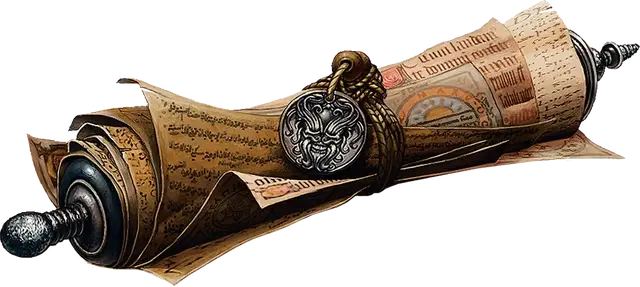

Свиток защиты
Scroll of Protection
Свиток, редкий

Рекомендованная стоимость 251-2 500 зм
Каждый свиток защиты работает против какого-то одного определённого вида существ, выбранного Мастером самостоятельно или же случайным образом с помощью приведённой ниже таблицы.
| к100 | Вид существ |
| 01-10 | Аберрации |
| 11-20 | Звери |
| 21-45 | Исчадия |
| 46-55 | Небожители |
| 56-75 | Нежить |
| 76-80 | Растения |
| 81-90 | Феи |
| 91-00 | Элементали |
Прочитав действием свиток, вы окружаете себя невидимым барьером, формирующим цилиндр с радиусом 5 футов и высотой 10 футов. В течение 5 минут этот барьер препятствует созданиям определённого вида входить в цилиндр и каким-либо образом воздействовать на то, что заключено в него.
Этот цилиндр перемещается вместе с вами, оставаясь с центром на вас. Однако, если вы перемещаетесь так, что существо указанного вида окажется внутри цилиндра, защитный эффект заканчивается.
Существо может попытаться преодолеть барьер, совершив действием проверку Харизмы Сл 15. При успехе барьер на это конкретное существо не действует.